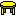
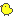
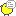
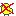

bt_chan1.png
bt_chan1.png i16_ignore.png
i16_ignore.png i16_naruto.png
i16_naruto.png i16_plus.png
i16_plus.png現在の画像パーツは http://tate.undef.jp/qi2j/ においてあります。
|
|
bg**.png はペインの枠の画像です。
8枚の画像を組み合わせてペインの枠を作ります。
4辺の画像はペインの大きさにあわせて伸びたり縮んだりします。
このサンプルの元画像はframe1.psdです。
| bt_root.png | プログラム設定 |
| bt_conn1.png | サーバ 切断中 |
| bt_conn2.png | サーバ 接続中 |
| bt_chan1.png | チャンネル 退出中 |
|  bt_chan2.png | チャンネル 参加中 |
| bt_chan3.png | チャンネル 未読あり |
|  bt_priv2.png | 内緒話 |
|  bt_priv3.png | 内緒話 未読あり |
|  bt_priv4.png | 内緒話 無視 |
| i16_ignore.png | 参加者の状態 無視 |
| i16_naruto.png | 参加者の状態 オペレータ |
| i16_plus.png | 参加者の状態 Visitor |
| 参加者の状態 通常 |
アイコン画像は透明色の扱いに注意してください。